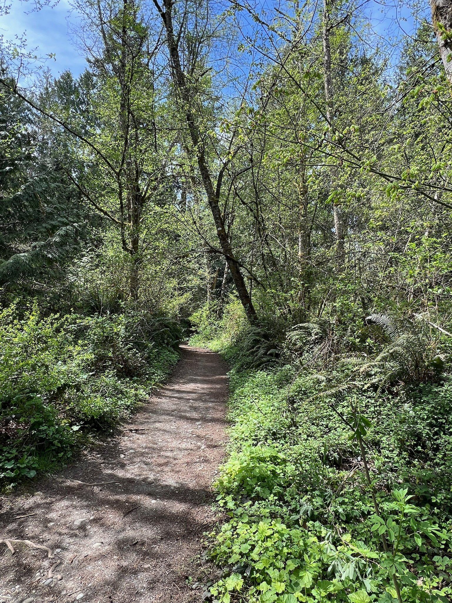
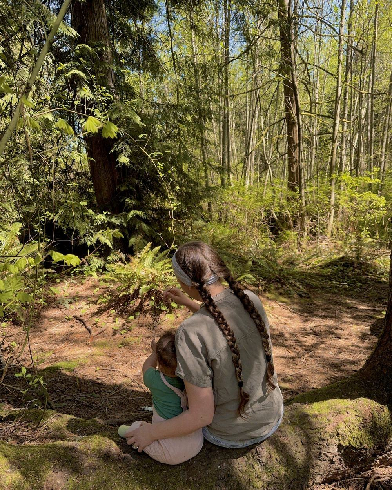

Our Story
The class I wished existed when I became a mom.

Hello! I’m Mattison. While earning my bachelor’s in elementary education at Western Washington University, I taught preschool at A Little Darling School in Bellingham, WA, working alongside my mentor Netta Darling. That’s where my love of early childhood first took root, and where I learned her teaching philosophy:
The environment is the teacher. Let children lead. Trust the process.Netta Darling
Then I spent years as a middle school science teacher, watching kids light up when they got to touch, build, and explore instead of just sitting and listening.
When my daughter came along, I watched her reach for leaves and study bugs before she could walk, completely absorbed in the world around her. And I kept thinking, where is the space built for this? Where do toddlers and their grown-ups go to learn outside together?
Netta’s words stayed with me, and they gave me the courage to build something of my own.
Little Roots Forest School is the class I wished existed when I was a new mom looking for a reason to get outside on a Wednesday morning, somewhere my daughter and I could learn together.
Mattison Williams Founder and Lead Teacher
Meet Your Teachers

Mattison Williams
Founder and Lead Teacher- Licensed Washington State educator
- Bachelor’s in Elementary Education with a focus in general sciences from Western Washington University
- Former preschool and middle school science teacher
- Pediatric CPR & First Aid certified
- Mom to one nature-loving girl who comes to class every Wednesday

Katelyn
Co-Teacher- Early childhood education student
- YMCA youth program leader: coach, referee, summer camp
- Pediatric CPR & First Aid certified
“One thing I love most about working with little kids is their view on the world. They notice the smallest things and find so much joy in them! It always reminds me to slow down and appreciate the little moments a bit more.”
“When a kid is upset or melting down, my instinct is to stay calm and meet them where they’re at. I want them to feel supported, not shut down. Sometimes that means giving space, and sometimes it means sitting with them through it.”
What We Believe
The forest is the classroom.
Toddlers learn best from real things they can touch, smell, and splash in, so we skip the worksheets. A fallen log becomes a balance beam, and a puddle becomes a science lesson.
Kids lead, we follow.
If your toddler wants to explore the same plant for fifteen minutes, we let them. That deep focus is how they make sense of their world, so we never rush anyone along to the next thing.
Everyone teaches, everyone learns.
Grown-ups join in right alongside their kids, noticing what they notice and wondering what they wonder.
Everything has a purpose.
When your toddler dumps a cup of water for the 47th time, they’re not being difficult. They’re studying gravity and cause and effect. We’ll help you see the learning that’s already happening in their play.
This is for you, too.
Parenting little ones can feel isolating, especially in the PNW rain. Wednesday mornings are a chance to get to know other families, and maybe make a friend who also doesn’t mind their kid eating a little dirt.
“Mattison Williams is fantastic and we adore and appreciate all the work and effort she puts into making sure every child feels special, unique, and wonderful.”